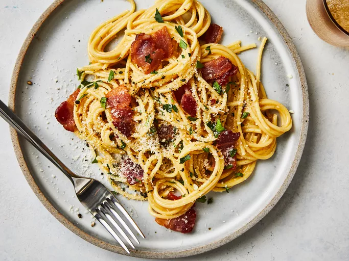

Spaghetti Carbonara

Description
Spaghetti Carbonara is a classic Italian pasta dish that originates from Rome. It features a creamy sauce made from eggs, cheese (Pecorino Romano or Parmesan), pancetta, and pepper, creating a rich and satisfying meal. The dish is known for its simplicity and quick preparation, making it a favorite among home cooks.
The key to a perfect Carbonara is to mix the hot pasta with the egg and cheese mixture, allowing the residual heat to create a creamy sauce without scrambling the eggs. Traditionally served with a generous amount of black pepper, Carbonara is a comforting dish that showcases the flavors of Italy.
Ingredients
- 12 oz (340 g) spaghetti
- 4 oz (115 g) pancetta or guanciale, diced
- 2 large eggs
- 1 cup grated Pecorino Romano cheese
- Salt and black pepper to taste
- Fresh parsley, chopped (for garnish)
Steps
- Cook Pasta: Boil salted water and cook spaghetti until al dente. Reserve some pasta water before draining.
- Cook Pancetta: In a skillet, cook pancetta until crispy. Remove from heat.
- Mix Eggs and Cheese: In a bowl, whisk eggs with Pecorino cheese, salt, and pepper.
- Combine: Toss hot pasta with pancetta, then mix in the egg and cheese mixture, adding reserved pasta water to reach desired creaminess.
- Serve: Plate and garnish with additional cheese and parsley.